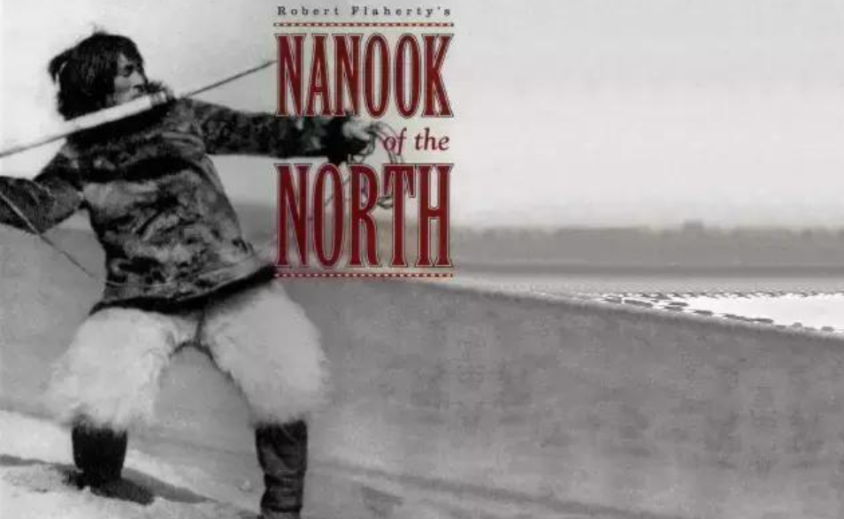
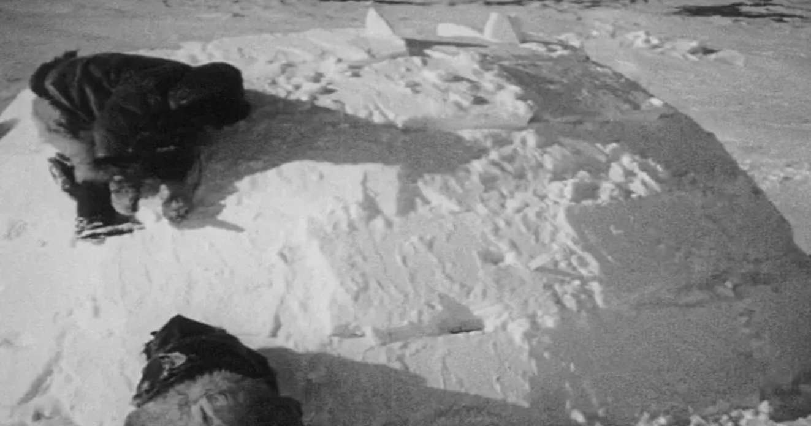
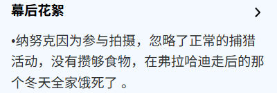
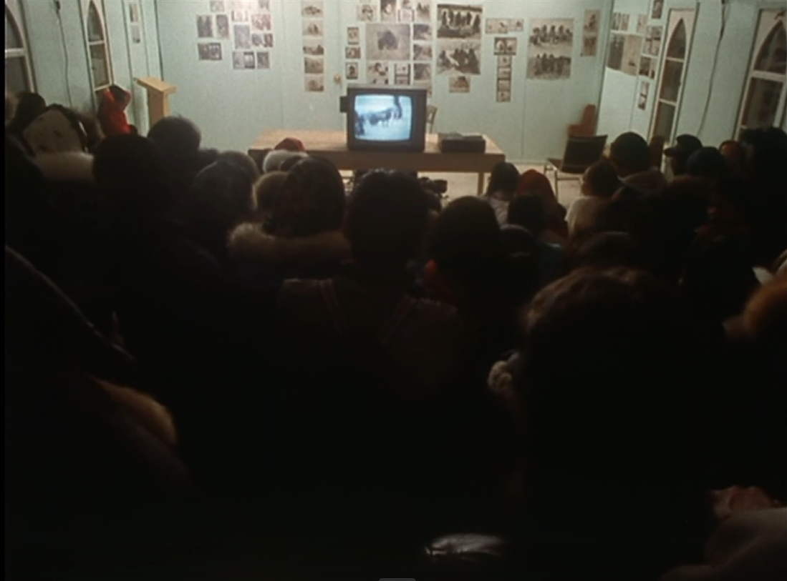

主导类型
参与型纪录片
导演进入当地生活，与被摄者协商、安排部分场面，共同形成影像中的真实。
NANOOK OF THE NORTH · 1922
《北方的纳努克》与《Nanook Revisited》的重新观看

ARCHIVE / INUKJUAK01 / CONTEXT
20世纪初的北极不只是地图上的一片冰原，也是充斥着西方文化对未知的假想之地。探险报道、旅行文学、博物馆展览和毛皮贸易，把北极塑造成遥远、危险、纯粹……总之是个没有现代生活的“最后世界”。在这种想象中，北方人应该靠自己的身体、工具和勇气与自然搏斗；而步枪、商店所代表的新生活方式，反而会破坏观众心中那个古老而完整的北方。北极原住民怎么能用枪呢？怎么能开车呢？
这种想象带着明显的时代局限。西方观众一边把北极当成等待被发现的空间，一边把当地人当成“过去的人”来观看。当地社会正在变化，却常常被电影、展览和报道固定成一个不会改变的原始世界。纳努克之所以吸引弗拉哈迪，也正因为他身上承载了这个时代想看的北方：一个“野蛮人”，被放进了西方观众期待的生存神话里的“野蛮人”。
所以，弗拉哈迪的拍摄，是在回应一种已经存在的文化期待：把北极拍成一个可以让城市观众暂时逃离现代生活的野蛮之地。而这种回应带来了一种视角的预设，会影响他的选择，也会影响哪些内容被保留下来，哪些变化被藏到镜头之外。
1922年影片上映。纳努克一家被包装成在冰原上生存的英雄，真实生活被组织成一部有起伏、有笑容、有危险的电影。然而，纳努克甚至并不是纳努克的名字，他叫 Allakariallak。

02 / FORM
《北方的纳努克》属于早期民族志电影，也就是反映特定区域中特定族群生活、历史或现状的电影。它是一部面向公众的电影，把陌生的生活拍得具体、亲近，也把现实组织成了有起伏的故事。
如果用课上讲的纪录片类型来划分，它主要是参与型纪录片。弗拉哈迪进入当地生活，与被摄者协商拍摄内容，安排部分场面，并让当地人重现已经发生变化的传统活动。影片中的真实不是摄影机被动等来的，而是在导演、纳努克和当地社区共同完成的拍摄过程中形成的。
而为什么不是观察型纪录片？影片确实保留了捕猎、建冰屋、寻找食物等劳动过程，让观众产生“我正在现场观看”的感觉，这在早期可能会被认为是观察型纪录片。但是，随着后来大量幕后信息被披露，重演、摆拍和人物安排逐渐进入讨论。弗拉哈迪并没有尽量退到现场之外，影像中存在着大量导演干涉，例如拆掉冰屋以获得更好看的光影，让主角重演祖父辈的打猎方式。
影片还带有一点阐述型功能，但这种阐述不是后来纪录片里常见的旁白。它主要通过无声电影中的文字介绍、字幕、人物命名、剪辑和季节性的旅程结构，替观众整理意义，把纳努克塑造成“北方生存者”。所以更准确的说法是：它以参与型为主，带有少量阐述型组织。
弗拉哈迪让当地人参与拍摄，也把拍出的胶片给他们看；可是最终的命名、剪辑和发行仍由他控制。这是一种有参与、却不平等的合作。
导演进入当地生活，与被摄者协商、安排部分场面，共同形成影像中的真实。
无声字幕、命名、剪辑和季节结构替观众整理意义，但没有后来纪录片常见的旁白。
重演、摆拍和导演干涉说明摄影机没有退到现场之外。
03 / ETHICS
当地人已经使用步枪捕猎海象，影片却让纳努克重新使用鱼叉。这个选择和前面的时代背景有关：弗拉哈迪面对的是西方观众对“古老北方”的期待。为了让影像符合这种想象，也可能是为了保存一种正在消失的传统，他让已经使用步枪的猎人重新演出古老的捕捉方式。
这不是简单的“真假”问题，而是导演替被摄者决定什么才算值得被记录。当地人的现实生活正在变化，但影片把其中一部分重新放回了西方观众熟悉的过去。
徒手捕猎海豹，对观众来说只是一个镜头，但对纳努克来说可能是时间、体力和生存。有一种说法是：纳努克因为参与拍摄，忽略了正常的捕猎活动，没有攒够食物，在弗拉哈迪离开后的那个冬天全家饿死了。关于“拍摄导致全家饿死”的说法证据并不充足，不能当作结论看待；但拍摄是否让被摄者承担了额外风险，则是作品必须面对的问题。
例如，为了拍摄更好的光影而拆掉居住的冰屋，这一安排至少清楚地显示了拍摄对一家人生活空间的直接干预。

“Nanook”是为了欧洲观众而使用的名字，他真实的名字是 Allakariallak。但是，观众看到这张脸时，想到的往往不是现实中的 Allakariallak，而是电影给他安排的身份。
片中的家庭关系也不能完全等同于现实生活。被称为 Nanook 妻子的 Nyla 和 Cunayou，并不一定是 Allakariallak 现实中的妻子。后来《Nanook Revisited》通过家属访谈指出，弗拉哈迪曾与扮演 Nyla 的女性有亲密关系，并与她生育了一个孩子。弗拉哈迪在美国有正式妻子，因此把这段关系直接说成“他在当地有两个老婆”并不准确，更稳妥的说法是：他曾与两位因纽特女性有亲密关系。
至于片中人物究竟是亲属、伴侣还是邻居，目前仍有部分争议，不能简单断言他们原本只是邻居、后来才被拼成一家人。比较确定的是，弗拉哈迪把不同人物和关系重新组织成了“纳努克一家”，让他们更符合西方观众对家庭和北极生活的想象。
被摄者的真实身份一旦被电影固定，之后很难再由本人重新解释。现实中的 Allakariallak 会老去、会死亡，电影里的 Nanook 却永远年轻、强壮、快乐。他获得了影像上的不朽，也被固定成了一个不能回应的形象。
纳努克去世后，电影里的形象仍然替他发言。但是，他并没有一个向世人展现自己现代生活的机会，只能永远以那个原始的形象存在；他真实的、使用步枪打猎的日常，反而无人知晓。
04 / REVISIT
《Nanook Revisited》（Claude Massot，1988）不是《北方的纳努克》的简单续集，而是一部重新检查旧影像的反身型纪录片。它把摄影机、导演、剪辑和“纪录片怎样制造真实”这些问题重新放到镜头前，让观众意识到，自己看到的并不是一个透明的过去，而是经过拍摄和安排的过去。
这部片回到纳努克生活过的地方，把《北方的纳努克》放给当地人观看，访问家人、后代和社区成员，也重新走访影片中的地点。旧电影不再只是由弗拉哈迪解释，而是交给曾经被拍摄的社区重新观看、评论和记忆。
影片关注的不是纳努克个人传奇本身，而是这段传奇是怎样被制造出来的：他的名字如何被替换，家庭关系怎样被安排，传统捕猎为什么要被重演，以及当地人如何看待这部让他们闻名世界的电影。
因此，它的主导类型是反身型纪录片，同时带有参与型回访和观察型访问的方式。它一方面进入当地，与家人和社区交谈；另一方面不断提醒观众，回访片本身也有导演的选择，也不自动等于唯一真相。
它最重要的变化，是让原来只有一个人的历史重新出现很多声音。原来是导演观看纳努克，观众通过导演观看纳努克；到了《Nanook Revisited》，家人和社区也获得了观看、解释和纠正这段历史的位置。

05 / TODAY
如果纳努克生活在今天，他可能会因为鲜明的性格和生活方式走红，拥有账号、品牌合作和收入。成名本身不一定是坏事，参与拍摄也不一定意味着被动受害。
关键在于纳努克是否能够参与决定这个形象的使用方式：
我们不必替纳努克拒绝成名，但应该保证他有权决定怎样成名，并得到与付出相称的收益。